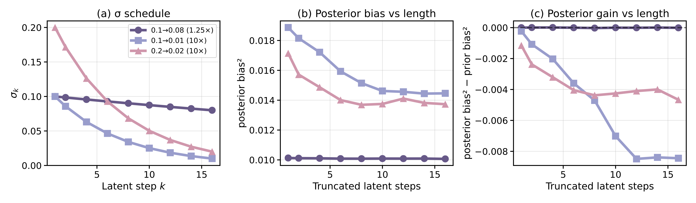

| Zero-Shot | Finetuned | |||||
|---|---|---|---|---|---|---|
| block-bowl | marker-mug | peg-hole | clean-table (1/3) | clean-table (2/3) | clean-table (3/3) | |
| OpenVLA | 0.30 | 0.00 | 0.30 | 0.85 | 0.30 | 0.05 |
| DP | 0.40 | 0.25 | 0.30 | 0.80 | 0.55 | 0.25 |
| LMP-π | 0.65 | 0.55 | 0.70 | 0.95 | 0.95 | 0.55 |
Analysis
Does the model adaptively allocate test-time compute?
We visualize the number of reasoning steps generated during rollouts. The model uses fewer reasoning steps during gripper movements, e.g., grasping and releasing in DROID tasks or hand-over in RoboMimic transport.
DROID Tasks
Simulation Tasks
Probing Task
We manually slide a block through the open gripper while querying the policy for the number of reasoning steps at each state. The reasoning length shifts with the block's position relative to the gripper.
Does iterative computation help?
We compare LMP-π to two non-iterative latent-variable baselines: Gaussian VAE Policy and VQ-BeT. LMP-π consistently outperforms both on D3IL and RoboMimic, indicating that fixed-length latent representations lack the granularity needed for complex manipulation tasks.
| Task | VQ-BeT | VAE | LMP-π |
|---|---|---|---|
| d3il-aligning | 0.23 ±0.03 | 0.51 ±0.07 | 0.71 ±0.04 |
| d3il-stacking | 0.53 ±0.03 | 0.71 ±0.07 | 0.86 ±0.04 |
| d3il-sorting-2 | 0.46 ±0.02 | 0.67 ±0.13 | 0.80 ±0.01 |
| d3il-sorting-4 | 0.41 ±0.01 | 0.68 ±0.04 | 0.68 ±0.02 |
| d3il-sorting-6 | 0.32 ±0.04 | 0.70 ±0.04 | 0.75 ±0.04 |
| d3il average | 0.39 | 0.57 | 0.76 |
| robomimic-lift | 0.96 ±0.00 | 0.97 ±0.01 | 1.00 ±0.00 |
| robomimic-can | 0.83 ±0.04 | 0.78 ±0.07 | 1.00 ±0.00 |
| robomimic-square | 0.58 ±0.06 | 0.79 ±0.08 | 0.87 ±0.02 |
| robomimic-tool-hang | 0.15 ±0.04 | 0.29 ±0.06 | 0.51 ±0.08 |
| robomimic-transport | 0.26 ±0.05 | 0.58 ±0.12 | 0.75 ±0.08 |
| robomimic average | 0.56 | 0.68 | 0.83 |
Does compression contribute to performance?
We ablate compression strength by controlling the decoder variance schedule. A smaller σmin penalizes prediction errors more heavily, yielding shorter latent traces. Across LIBERO tasks, increasing compression (smaller σmin) improves performance, showing that parsimonious allocation of latent tokens is crucial for generalization.
| σmax → σmin | All Tasks | Bottom-10 Tasks |
|---|---|---|
| 0.1 → 0.01 | 0.933 ±0.003 | 0.645 ±0.023 |
| 0.1 → 0.03 | 0.913 ±0.001 | 0.567 ±0.006 |
| 0.1 → 0.05 | 0.870 ±0.012 | 0.450 ±0.045 |
On DROID checkpoints, we find that too little compression (0.1-0.08) causes the decoder to ignore the latents; too much (0.1-0.01) forces overly short traces and raises reconstruction error; we use a balanced schedule (0.2-0.02) in our experiments.
